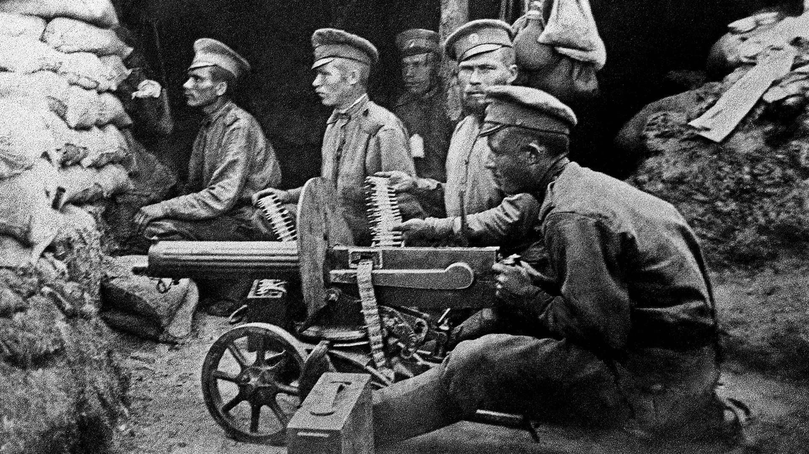
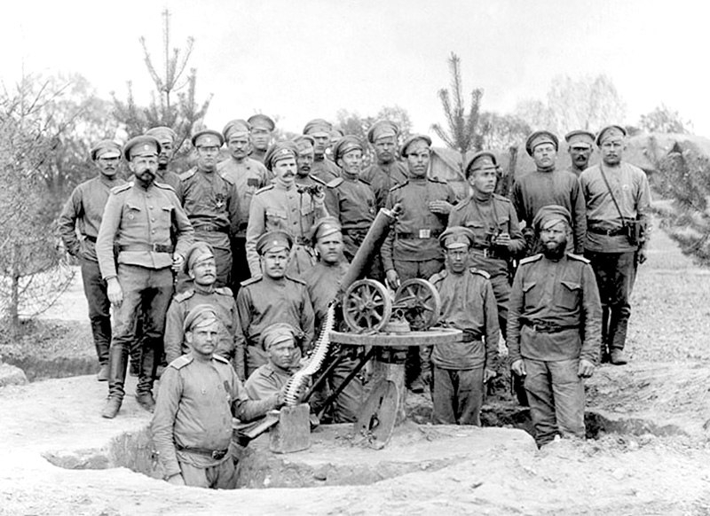
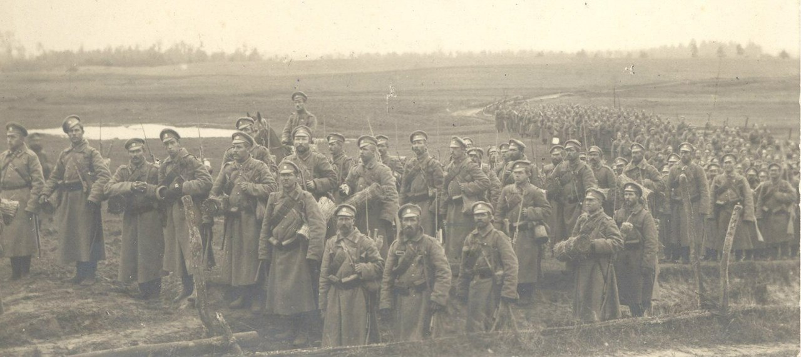
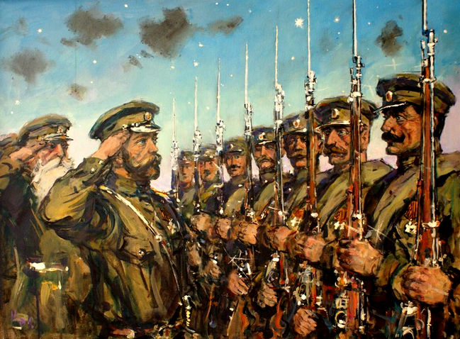
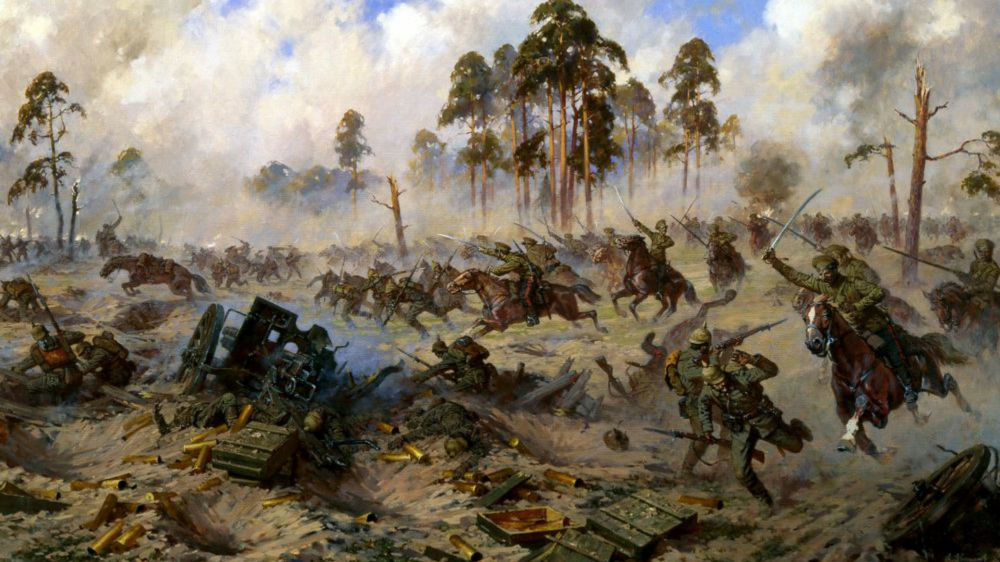

Россия в Первой мировой войне
В начале ХХ века одним из направлений внешней политики Российской империи было получение контроля над черноморскими проливами Босфор и Дарданеллы. Вступление в Антанту в 1907 году могло решить этот вопрос в условиях войны с Тройственным союзом. Говоря кратко о России в Первой Мировой войне, надо сказать, что это был единственный шанс, когда эта проблема могла быть решена.

Вступление России в Первую Мировую войну
28 июля 1914 года Австро-Венгрия объявила Сербии войну. В ответ на это Николай II подписал указ о всеобщей мобилизации три дня спустя. Ответными действиями отметилась Германия, объявив войну России 1 августа 1914 года. Именно эта дата считается началом участия в мировой войне России.
По всей стране наблюдался общий эмоциональный и патриотический подъем. Люди шли добровольцами на фронт, в крупных городах проводились демонстрации, имели место немецкие погромы. Жителями империи были высказаны намерения вести войну до победного конца. На фоне общенародных настроений Санкт-Петербург был переименован в Петроград. Экономика страны постепенно стала переводиться на военные рельсы.

Вступление России в Первую Мировую войну отвечало не только идее защитить балканские народы от внешней угрозы. У страны были и свои цели, главной из которых было установление контроля над Босфором и Дарданеллами, а также присоединение Анатолии к империи, так как там проживали армяне-христиане в количестве более миллиона человек. Кроме того, Россия желала объединить под своим началом все польские земли, которыми в 1914 году владели противники Антанты – Германия и Австро-Венгрия.
Боевые действия 1914-1915 годов
Боевые действия 1914-1915 годов
Начать боевые действия пришлось форсированными темпами. Немецкие войска наступали на Париж и чтобы оттянуть часть войск оттуда, на Восточном фронте пришлось развернуть наступление двух русских армий в Восточной Пруссии. Наступление не встречало никакого сопротивления, пока сюда не прибыл генерал Пауль фон Гинденбург, который наладил оборону, а вскоре и вовсе окружил и разбил армию Самсонова, а после заставил отступить Рененкампфа.
На юго-западном направлении в 1914 году ставка провела ряд операций против австро-венгерский войск, заняв часть Галиции и Буковины. Таким образом, Россия сыграла свою роль в спасении Парижа.

К 1915 году начала сказываться нехватка вооружения и боеприпасов в русской армии. Вкупе с большими потерями, войска начали отступление на восток. Немцы рассчитывали в 1915 году вывести Россию из войны, перебросив сюда основные силы. Оснащенность и численность германской армии заставила наши войска к концу 1915 года покинуть Галицию, Польшу, Прибалтику, Беларусь и часть Украины. Россия оказалась в крайне тяжелом положении.
Брусиловский прорыв
В феврале 1916 года, имея явное преимущество на востоке, Германия перебросила основные силы на Западный фронт, где началась битва при Вердене. К этому времени экономика России полностью перестроилась, на фронт стала поступать техника, вооружение, боеприпасы.

России вновь пришлось выступать помощницей своим союзникам. На русско-австрийском фронте генералом Брусиловым началась подготовка к широкомасштабному наступлению с целью прорвать фронт и вывести Австро-Венгрию из войны.
Накануне наступления солдаты занимались рытьем траншей в сторону позиций неприятеля и их маскировкой, чтобы максимально приблизиться к ним перед штыковой атакой.
Наступление позволило продвинуться на десятки, а местами и сотни километров на запад, но главная цель (разбить армию Австро-Венгрии) так и не была решена. Зато немцы Верден так и не смогли взять.
Выход России из Первой Мировой войны

К 1917 году в России все больше нарастало недовольство войной. В крупных городах были очереди, не хватало хлеба. Росли антипомещичьи настроения. Началось политическое разложение страны. На фронте широко распространилось братание, дезертирство. Свержение Николая II и приход к власти Временного правительства окончательно разложил фронт, где появились комитеты солдатских депутатов. Теперь они решали, идти ли в атаку или вообще бросать фронт.
В 1917 году в страну тайно из Швейцарии через Германию и Финляндию проник В. И. Ленин. Великая Октябрьская Социалистическая Революция привела к власти большевиков, которые вскоре заключили позорный Брестский сепаратный мир. Так закончилось участие России в Первой Мировой войне.